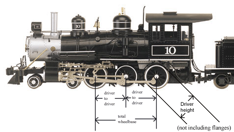

The
MyLargeScale.com
Large Scale locomotive
driver & powerblock kitbashers guide.
(also a guide to
"what Large Scale locomotives are out there?")

Note: Some of the locomotives
in this database are no longer in production, and are only available on
the used market.
|
|
Driver height | Driver-to-Driver distance | Total driver wheelbase | Notes. |
| RRuby (live steam) | 1.4" 35mm | 2.36" (2-3/8) 60mm | 2.36" (2-3/8) 60mm | more dims here |
| . Porter 0-4-0.. (electric only) | ..1.15" 29.2mm | ..2.4" 61mm | ..2.4" 61mm | ..1/20.3 scale |
| ...2
Cylinder Shay
(electric & live steam) |
.. | .. | .. | ..1/20.3 scale |
| ..
3 Cylinder
Shay
(electric & live steam) |
.. | .. | .. | ..1/20.3 scale |
| ...Mogul 2-6-0 (live steam) | ..flanged:
1.950" (49.5mm)
.blind: 1.940" (49.3mm) |
..axles
1-2: 3.150" (80mm)
.axles 2-3: 4.527" (115mm) |
..7.677" (195mm) | ..1/20.3 scale |
| . SP S-12 0-6-0..(live steam) | ..(not yet released) | .. | .. | ..1/32 scale |
| . C16
2-8-0..
(electric & live steam) |
..1.794"
(45.6mm).
..Blind drivers: 1.780" (45.2mm) |
..axles1-2
1.794" (45.6mm)
..axles 2-3 1.800" (45.72mm) ..axles 3-4 2.383" (63mm) |
..6.75" (171mm) | ..1/20.3 scale |
|
|
Driver height | Driver-to-Driver distance | Total powerblock wheelbase | Notes. |
| 2-4-2 Rogers | ..1.75" 44.5mm | ..3" | ..3" | wheelsets available |
| 0-4-0 switcher | ..1 and 13/16" | ..1 and 7/8" | ..1 and 7/8" | wheelsets available |
| C-16 consolidation 2-8-0 | 1.45" 37mm | .. | .. | block available seprately.
1/24 scale |
| Pacific 4-6-2 | . 2.5" 63.5mm | .. | .. | 1/29 scale |
| Mikado 2-8-2 (electric & live steam) | .1.9" 48mm | .. | .. | 1/29 scale |
| Mallet 2-8-8-2 | ..1.9"
48mm
(same block as Mikado) |
.. | .. | 1/29 scale |
| Northern 4-8-4 (not yet available) | ..possibly 2.75"! | .. | .. | not yet released, to be based on ATSF 3571 -1/29 scale |
| Consolidation 2-8-0 (not yet available) | .. | .. | .. | 1/29 scale |
| SD45 | ..1 and 3/8" | ..2 and13/16" | ..5 and 5/8" | 1/29 scale. block available seprately ART29355 |
| U25B/RS3/FA block | ..1 and 3/8" | ..3 and 13/16" | ..3 and 13/16" | 1/29 scale. block available, ART29351 |
| "Lil Critter"(fictional loco, no prototype) | .. | .. | .. | 1/29 scale. |
| Center Cab (fictional loco, no prototype) | ..1 and 11/64" | ..2.35" 59.7mm | ..2.35" 59.7mm | 1/29 scale. block available, ART29536 |
| Mack Railbus | ..1 and 3/64" | ..2.35" 59.7mm | .. | 1/29 scale. block available, ART29538 |
| GE Dash 9-44CW | .. | .. | .. | 1/29 scale. |
|
|
Driver height | Driver-to-Driver distance | Total driver wheelbase | Notes. |
| 0-4-0T (side-tank) (out of production) | 1.32" 33.5mm | ..2.68" 68mm | ..2.68" 68mm | .. |
| 0-4-0T
(side-tank) |
.. | . | .. | |
| "Lynn" 2-4-2 (out of production) | 1.46" 37mm | ..2 and 5/8" | .. | .. |
| "Columbia" 2-4-2 (out of production) | 1.59" 40.4mm | ..1 and 15/16" | .. | .. |
| Big Hauler/Annie 4-6-0 | 2.0" 51mm | ..2 and 11/16" | ..5 and 3/8" | .. |
| "Indie"
mining mogul 2-6-0
(out of production) |
1.6" 41mm | .. | .. 4.25" 108mm | .. |
| Spectrum Mogul 2-6-0 | 2.0" 51mm | ..2.71" + 4.41" ..69mm + 112mm | 7.12" 181mm | 1/20.3 scale |
| Spectrum Americian 4-4-0 | 2.07" 52.5mm | 4.42" 112mm | 4.42" 112mm | 1/20.3 scale |
| "Connie" outside frame 2-8-0 | 1.9" 48mm | ..1.98" 50.3mm | ..5.85" 148.6mm | 1/20.3 scale |
| Spectrum Porter 0-4-0 (saddle tank) | .. | .. | .. | .1/20.3 scale |
| "Dizzie"
Center Cab GE Diesel
(out of production) |
.. | .. | .. | .1/20.3 scale |
| Spectrum Climax
(out of production) |
1.37" 35mm | ..2.36" 60mm | .. | .1/20.3 scale |
| Spectrum Heisler | .. | .. | .. | .1/20.3 scale |
| Spectrum 2-truck Shay | .. | .. | .. | .1/20.3 scale (block available) |
| Spectrum 3-truck Shay | .. | .. | .. | .1/20.3 scale (block available) |
|
|
Driver height | Driver-to-Driver distance | Total driver wheelbase | Notes. |
| Dutchess 2-4-0 | .. | .. | ..3" | 1/24 scale |
| Princess 2-4-4 | .. | .. | ..3" | .1/24 scale |
| Class A,B & C 0-4-0 | 1and 7/16ths. | .. | ..3" | .1/24 scale |
| Big John | .. | .. | .. | .1/24 scale |
| 4-4-0 american | 1.97" 50mm | .. | .. | .1/24 scale |
|
|
Driver height | Driver-to-Driver distance | Total driver wheelbase | ..Notes. |
| LS 4-4-2 Atlantic | ..2.65" 67.3mm | ..3.45" 87.6mm | ..3.45" 87.6mm | .. |
| LS 0-6-0 | ..1 and 7/16" | ..3 and 5/8" | ..3 and 5/8" | .. |
|
|
Driver height | Driver-to-Driver distance | Total driver wheelbase | Notes. |
| Mogul 2-6-0 | 1.8" 46mm | .. | ..5 and 1/16" | block available seprately |
| Mogul drive block | 1.8" 46mm | .. | ..5 and 1/16" | 65019 |
| 2-4-0 | .. | .. | .. | .. |
| Lehman "toy train" 0-4-0 | .. | .. | .. | .. |
| Forney 0-4-4 | .. | .. | .. | .. |
| Mikado 2-8-2 | .. | .. | .. | .. |
| snowplow block | .. | .. | .. | .. |
| Olomana 0-4-2 | .. .98" 25mm | .. 1.8" 46mm | ..1.8" 46mm | .. |
| Field Industrial loco | .. 15/32" | .. 1 and 13/16" | ..1 and 13/16" | .. |
| Porter 0-4-0 | ..11 and 3/16" | ..3" 76mm | ..3" 76mm | .. |
| F7 type gearbox | .. | .. | .. | 65057 |
| LCE-3 upgrade block | .. | .. | .. | 66095 |
| Stainz 0-4-0 | .. | .. | .. | .. |
| Rügen 0-8-0 | .. | .. | .. | 28002 |
| DR 2-10-2 | .. | .. | .. | 21811 |
|
|
Driver height | Driver-to-Driver distance | Total driver wheelbase | Notes. |
| Hudson.......................... | .. | .... | .... | 1/32 scale |
| GS-4 Northern | .. | .. | .. | 1/32 scale |
| Challenger 4-6-6-4 | .. | .. | .. | 1/32 scale |
| Dash-8 Diesel, 4 wheel truck | ..1.28" 32.5mm | ..3.65" 93mm | ..3.65" 93mm | 1/32 scale |
| Dash-8 Diesel, 6 wheel truck | ..1.28" 32.5mm | ..2.56" 65mm | ..5.12" 130mm | 1/32 scale |
|
|
Driver height | Driver-to-Driver distance | Total block wheelbase | Notes. |
| Hudson | .. | .. | .. | 1/29 scale |
| B6 0-6-0 (not yet available) | .. | .. | .. | 1/29 scale |
| GG1 | .. | .. | .. | 1/29 scale |
| Alco S4 | .. | .. | .. | 1/29 scale |
| EMD SD40-2 | .... | .... | .... | 1/29 scale |
| EMD SD70MAC | .. | .. | .. | 1/29 scale |
| Alco PA | .. | .. | .... | 1/29 scale |
| EMD F-3 | ..1 and 1/8" | . .3.75" | .. | 1/29 scale |
| EMD GP7 - GP9 | ..1 and 1/8" | . .3.75" | .. | 1/29 scale |
| EMD GP30 | ..1 and 1/8" | . .3.75" | .. | 1/29 scale |
| EMD GP38-2 | ..1 and 1/8" | . .3.75" | .. | 1/29 scale |
| EMD NW2 | ..1.14" 29mm | ..33.30" 83.8mm | ..33.30" 83.8mm | 1/29 scale |
| EMD 44Tonner | .. | .. | .. | 1/29 scale |
| EMD 20tonner | .. | .. | .. | 1/29 scale |
For updates, corrections, comments, etc, please email Scot at sscotsman@yahoo.com
Last updated February 28, 2008
{kind=link}
{kind=link}
{kind=link}
{kind=link}
{kind=link}
{kind=link}
{kind=link}
{kind=link}
{kind=link}
{kind=link}
{kind=link}
{kind=link}
{kind=link}
{kind=link}
{kind=link}